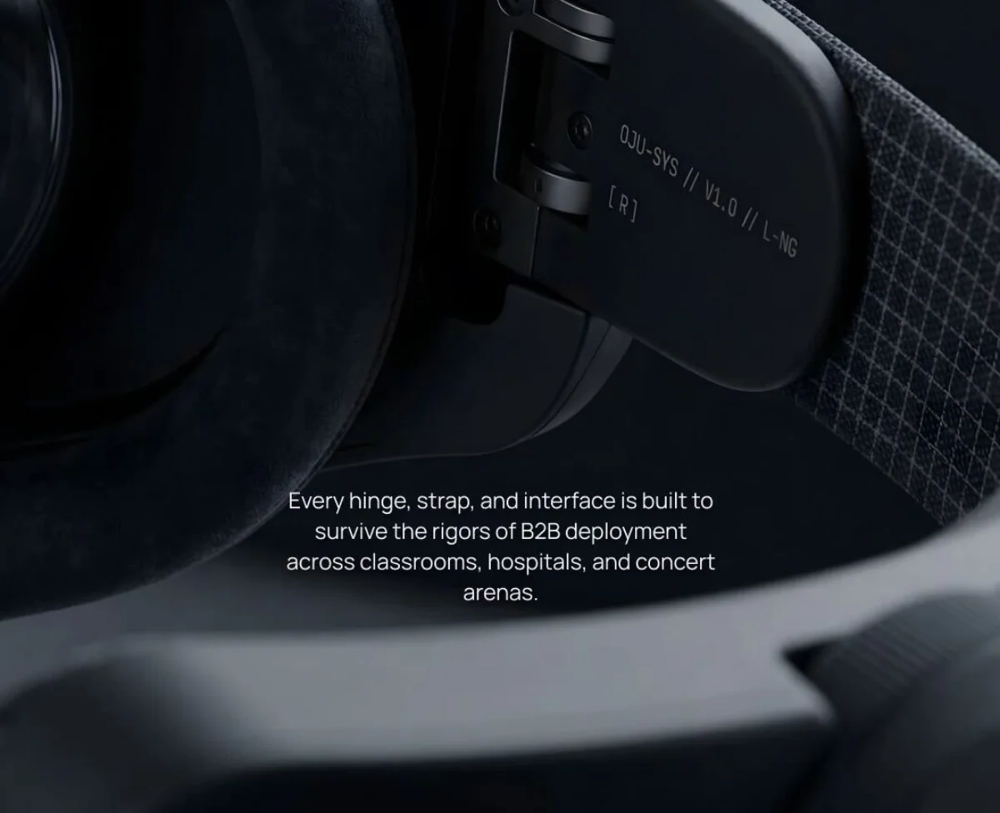
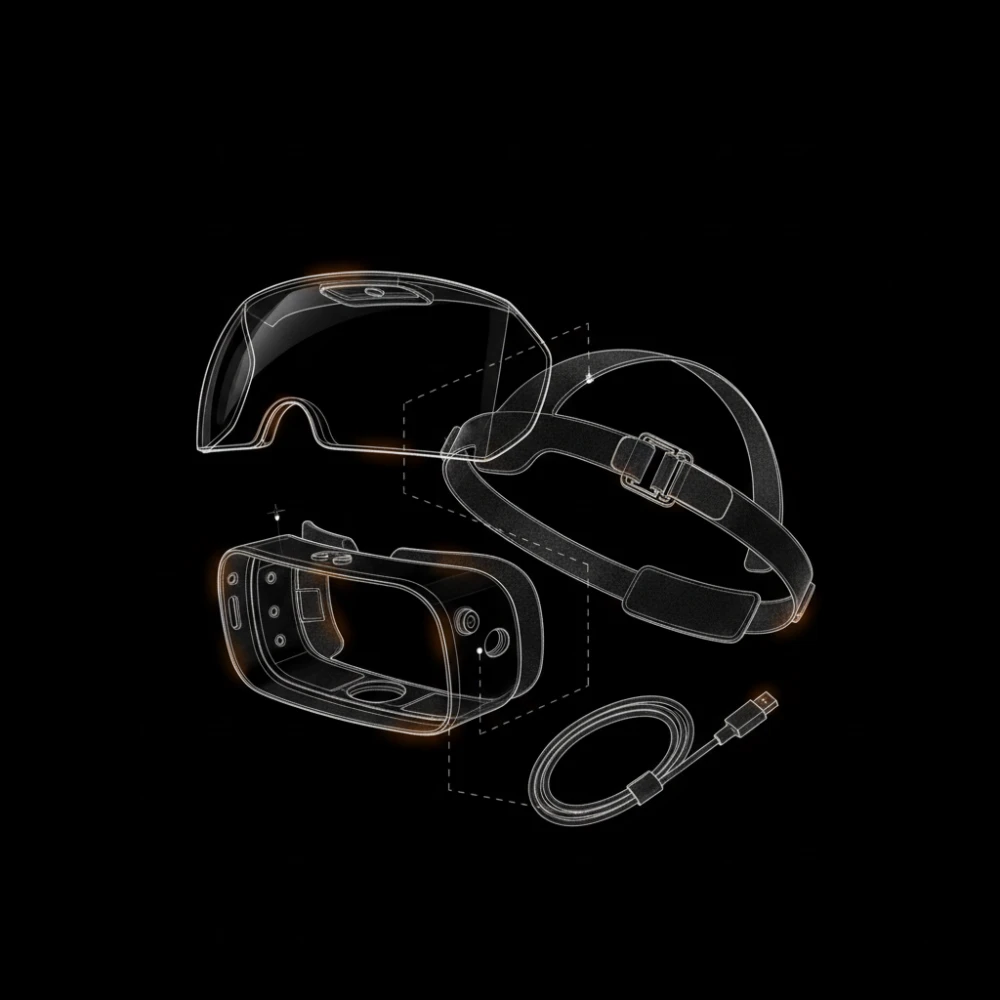
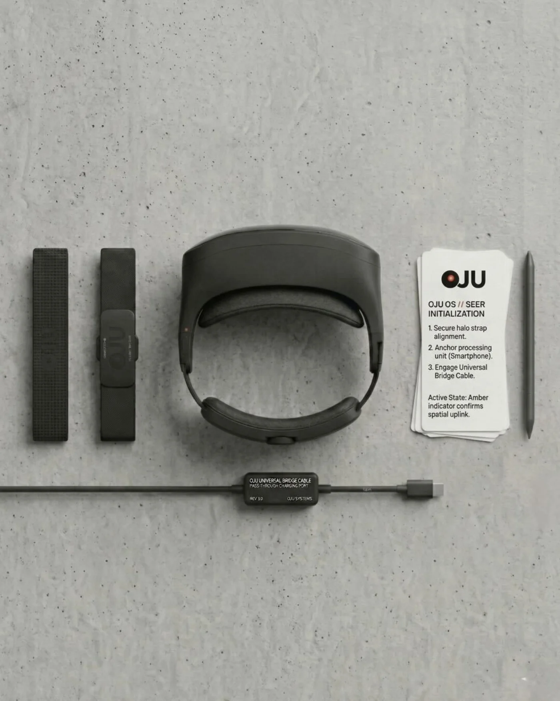
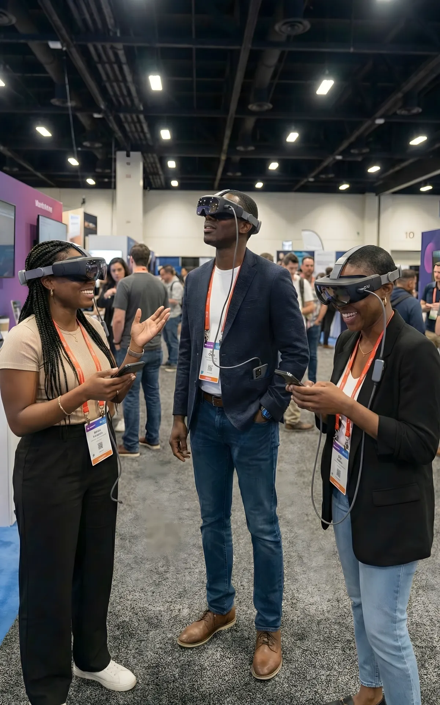
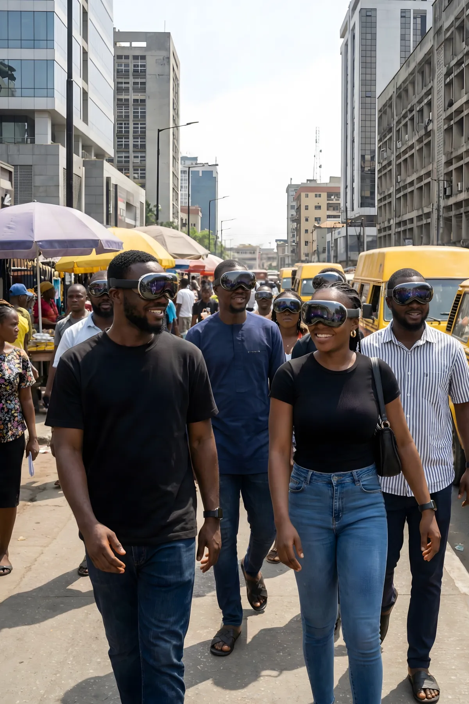
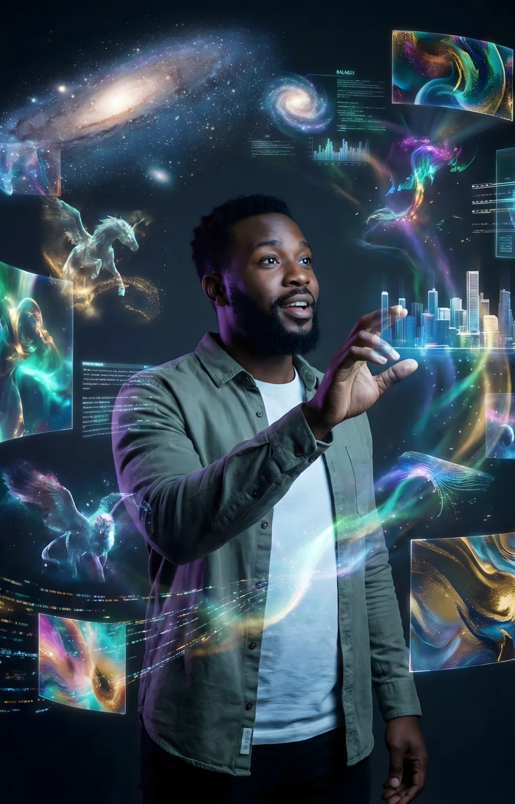

The future is here, but not for everyone.
Oju Systems is changing that.
Nigerian directors have extraordinary stories, but they can't afford the millions required for Hollywood-style sets and VFX. They need a way to shoot big on a small budget.
The world is moving from phones to spatial computing, but devices like the Apple Vision Pro lock most of Africa out. This price barrier denies education and healthcare access to the virtual simulations needed to compete globally.
The Seer
Spatial Computing. Radically Accessible.
The supercomputer required to run spatial computing already exists in the pockets of millions of Africans: the smartphone. By offloading all heavy processing to the phone you already own, The Seer delivers premium AR and VR at a fraction of the cost of imported alternatives.

Engineered for Reality

Works with any smartphone — Samsung, Tecno, or anything in between — through our smart logic protocol.
Instantly converts from transparent AR magic window to pitch-black VR cinema. One headset, two realities.
Our Oju Local Cloud deploys the app to hundreds of devices instantly via local Wi-Fi — no internet, no app store required.

The Ecosystem
Hardware is only the beginning. The Seer is the gateway to an entire platform.

Augmented Production Studio
A force multiplier for filmmakers. Using Generative AI, directors can shoot big-budget scenes without building physical sets — blending real actors with AI-generated environments.

Oju Experience Zones
Partnering with cinemas and event centers to create immersive venues where audiences don't just watch content — they step inside it.

Oju App
The software that ties hardware to content. Deployed instantly via Oju Local Cloud — zero internet data consumed, zero app store delays.
Beyond Entertainment
When you lower the cost of entry, you change who gets to build the future.
Immersive Education
50 students in a Lagos classroom, simultaneously interacting with a beating 3D holographic heart — completely independent of expensive internet bandwidth. The Seer replaces flat textbooks with spatial experiences: virtual field trips to historical sites, interactive 3D models of human organs, safe environments for special needs students to practice real-world skills.
Risk-Free Medical Training
Medical students can practice surgeries on holograms before touching real patients. Visualize internal anatomy — bones, tumors, respiratory systems — in full 6-DoF 3D, projected directly onto a desk. Speeding up learning. Ensuring safer procedures in real hospitals.
Oluwatosin Ezekiel Adeyemo
Founder & Lead ArchitectMy background is unconventional for hardware engineering, and that is exactly Oju's greatest advantage. As an Electrical/Electronics Engineering student at UNILAG, I understand the physical constraints of silicon and routing. But as a video producer and brand designer, I understand visual storytelling and human psychology.
Hardware is usually built by engineers who treat aesthetics as an afterthought. I approach Oju as a designer first. The Seer isn't designed to look like a bulky tech gadget — it is being meticulously crafted to feel like a premium lifestyle accessory.
My passion lies at this intersection: bridging complex, low-level engineering with bleeding-edge visual art, music, and Afrofuturism. Oju is the physical canvas for that intersection.
The Road Ahead
Backed by the S-VCG Tech Grant, our roadmap begins now.
Market Validation
Deploy The Seer via B2B rental for high-impact cinema events. Stress-test hardware durability with 500+ users in controlled environments.
Institutional Expansion
Transition to B2C and institutional models. Supply headsets to schools and hospitals for virtual simulation. Mass-produce for individual entertainment.
Deep-Tech Manufacturing
Pivot R&D to proprietary volumetric holographic displays — positioning Oju Systems as Africa's first optical hardware manufacturer.
This isn't just a startup.
Oju Systems represents more than a tech venture or creative studio. We are building industrial capacity in Nigeria by localizing the production of future-tech hardware and equipping the creative, educational, and medical sectors with the tools needed to compete globally.
ojusystems@gmail.com